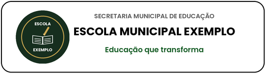
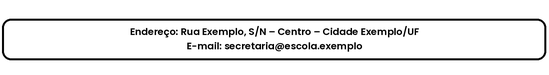

DECLARAÇÃO BOLSA FAMÍLIA
Declaro para os devidos fins que (NOME) (PALAVRA) em (DATA) natural de (CIDADE), (PALAVRA2) de (PAIS) está regularmente (PALAVRA3) no (ANOTURMA) do Ensino Fundamental nesta unidade de ensino.
INEP: 00000000
NIS: (NIS)
O estudante apresenta os seguintes percentuais de frequência nos meses de:
• (FREQ1)% de (MES1)
• (FREQ2)% de (MES2)
Cidade Exemplo, (DIA) de (MES) de (ANO)
__________________________________________________________
Responsável pela informação
__________________________________________________________
Gestor
